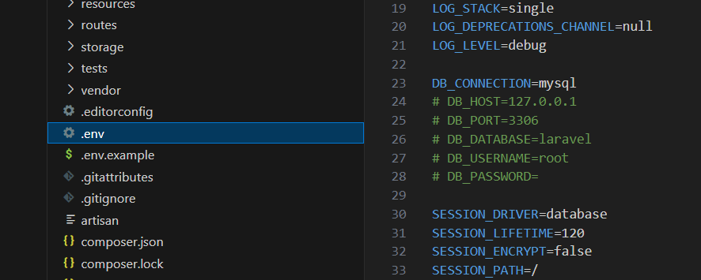
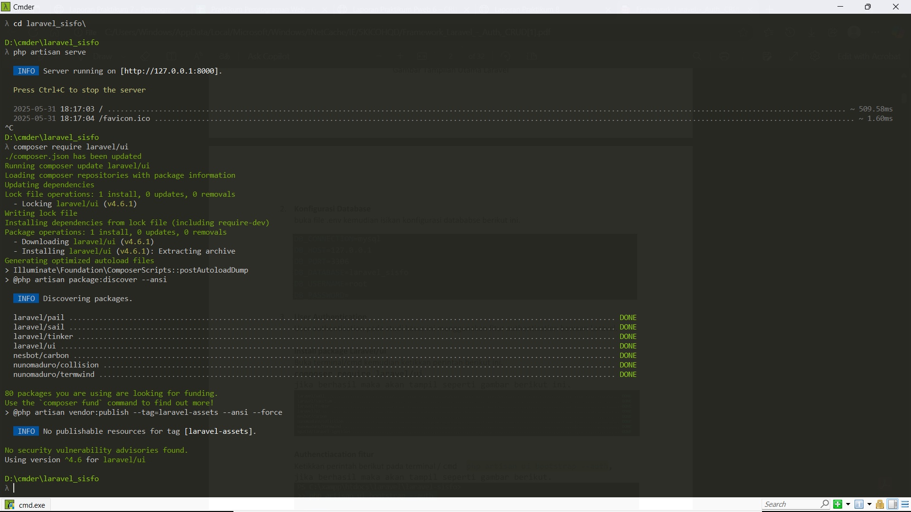
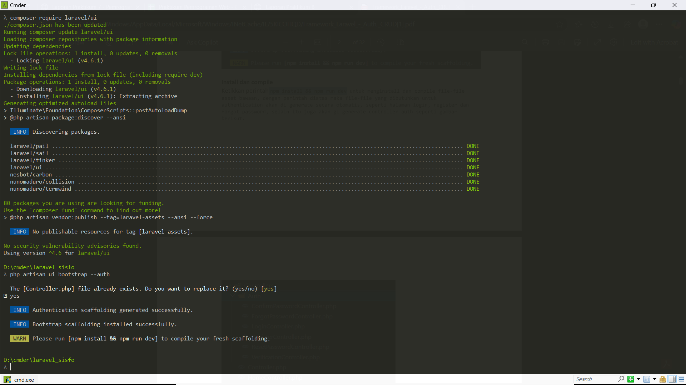

Laporan Praktikum 8 Pemrograman Web
LARAVEL AUTH, CRUD Multi Level User.
Hanifah Larama Agasi - 2311531002
Detail Laporan
A. Tujuan Praktikum
Untuk menunjukkan kepada para pengguna tentang lebih banyak cara menginstal dan membuat proyek Laravel dengan Composer dan mengatur konfigurasi database dengan benar. Tujuan dari latihan praktikum adalah untuk mengajarkan pengguna bagaimana membuat sistem autentikasi, seperti masuk dan log in menggunakan Laravel UI. Mereka juga akan diajarkan untuk mengubah struktur tabel pengguna sesuai kebutuhan, menambahkan data admin dengan seeder, dan mengintegrasikan template Bootstrap untuk meningkatkan antarmuka menggunakan engine templating Blade di dalam Laravel.
B. Langkah-langkah
1. Membuat Project Laravel
a. Menggunakan Laravel global installer
- Pertama buat folder / workspace terlebih dahulu didalam folder yang diinginkan, disini saya membuat dengan nama laravel
- Selanjutnya buka terminal / command prompt / cmder dan masuk kedalam workspace
- Setalah masuk kedalam workspace ketikkan perintah berikut untuk melakukan installasi
- Setelah instalasi selesai, selanjutnya buat project laravel dengan cara mengetikkan perintah berikut.
(composer global require "laravel/installer")
(laravel new laravel-sisfo)
b. Menggukanakn Composser
Cara kedua yang dapat digunakan untuk membuat project baru Laravel yaitu menggunakan comoposer, ketikkan perintah berikut pada workspace.
(composer create-project laravel/laravel=^12.0 laravel-sisfo --prefer-dist)
untuk menjalankan project dapat menggunakan perintah seperti dibawah ini.
(php artisan serve)
2. Konfigurasi Database
buka file .env kemudian isikan konfigurasi datababse berikut ini.

3. User authentication pada studi kasus ini menggunakan fitur authentication bawaan Laravel.
Install package Laravel/ui
Buka terminal/cmd kemudian ketikkan perintah berikut ini.
(composer require laravel/ui)
jika berhasil maka akan tampil seperti gambar berikut ini.

4. Authenctiacation fitur
(Ketikkan perintah berikut pada terminal / cmd php artisan ui bootstrap --auth)
jika berhasil maka akan tampil seperti gambar berikut.
